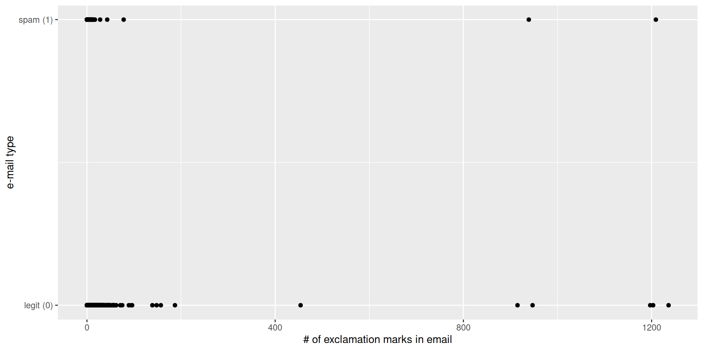
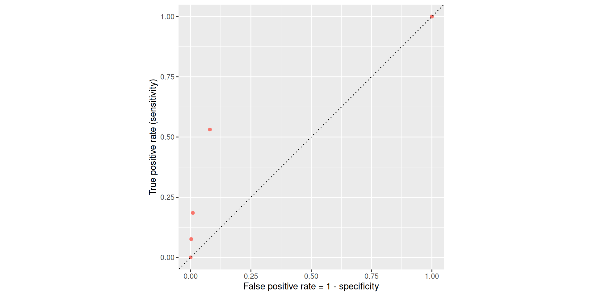
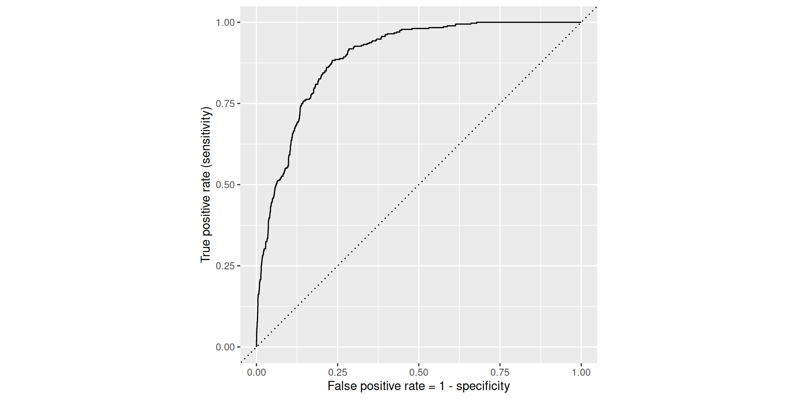
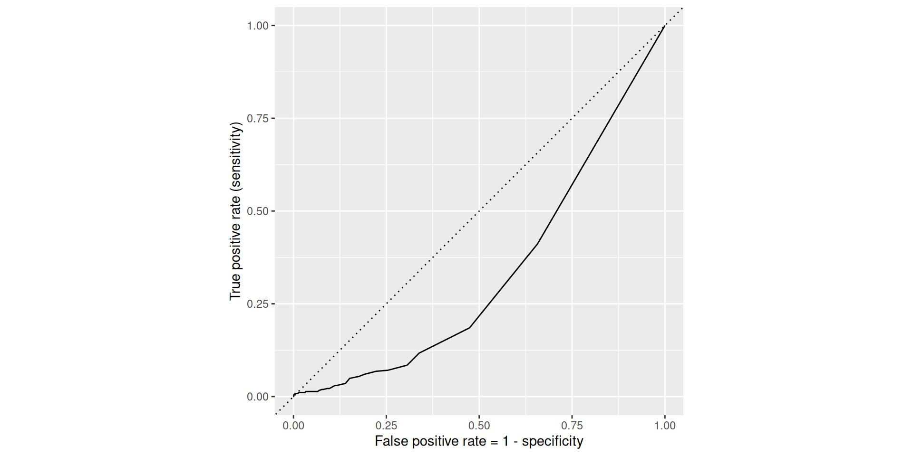
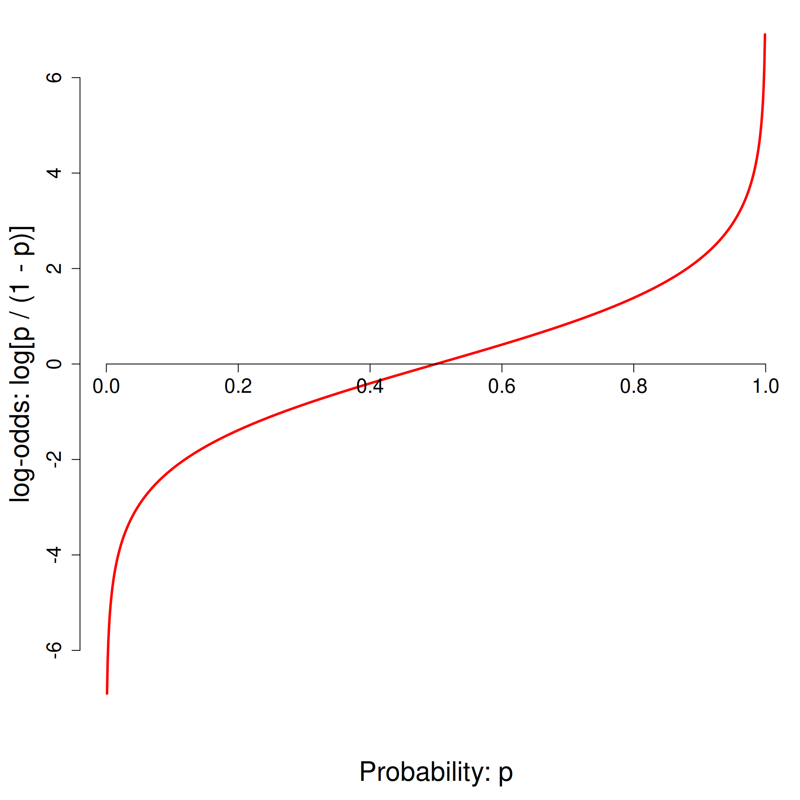
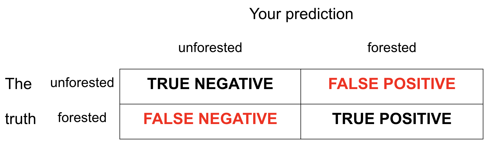
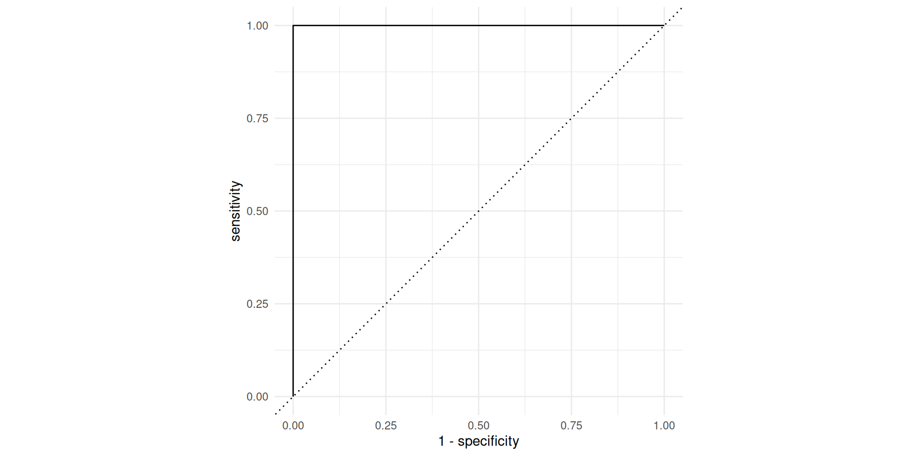
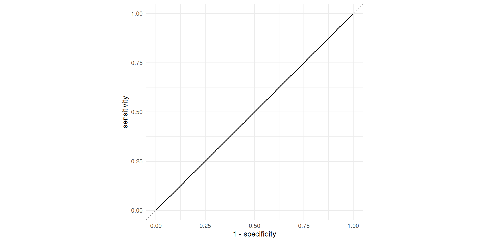
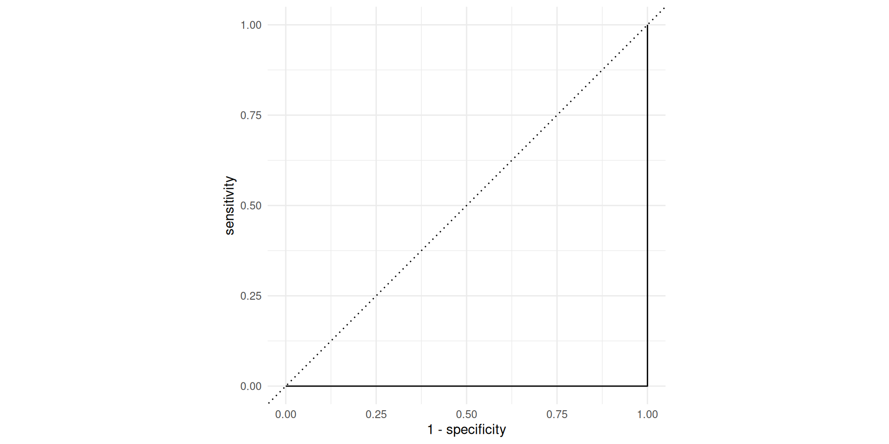

Logistic Regression II
Lecture 18
Katie Solarz
Duke University
STA 199 Summer 2026: Session I
June 11, 2026
Recap
Last time: regression with a binary response
\[ y = \begin{cases} 1 & &&\text{eg. Yes, Win, True, Heads, Success, Spam}\\ 0 & &&\text{eg. No, Lose, False, Tails, Failure, Legit}. \end{cases} \]
New model: logistic regression
S-curve for the probability of “success”:
\[ \widehat{p} = \widehat{\text{Prob}(y=1)} = \frac{e^{b_0+b_1x}}{1+e^{b_0+b_1x}}. \]
Linear model for the log-odds:
\[ \log\left(\frac{\hat{p}}{1-\hat{p}}\right) = b_0+b_1x. \]
These are equivalent.
R syntax is largely unchanged
Just use logistic_reg instead of linear_reg:
Fitted equation for the log-odds:
\[ \log\left(\frac{\hat{p}}{1-\hat{p}}\right) = -2.27 + 0.000272\times exclaim~mess \]
Interpretations are strange and delicate
If
exclaim_mess = 0, then \[ \widehat{p}=\widehat{P(y=1)}=\frac{e^{-2.27}}{1+e^{-2.27}}\approx 0.09. \] So, our model predicts that an email with no exclamation marks has a 9% probability of being spam.If the email has an additional exclamation mark, we predict the odds of the email being spam to be higher by a factor of \(e^{b_1} = e^{0.000272}\approx 1.000272\), on average.
The odds are higher because the scale factor is greater than one. If it had been 0.98, then the odds shrink and the interpretation would change to “we predict the odds to be lower by a factor of 0.98”
For any slope estimate > 0 (i.e., \(b_1 > 0\)), the multiplicative factor will be larger than 1 (use “higher” or “increase” by a factor of \(e^{b_1}\)); for any slope estimate < 0, the multiplicative factor will be 0 < \(e^{b_1}\) < 1 (use “lower” or “decrease” by a factor of …); for a slope estimate of exactly 0, the multiplicative factor is \(e^0 = 1\), and so the odds remain unchanged
Compute predicted probabilities with the expit function
tidy(simple_logistic_fit) |>
filter(term == "(Intercept)") |>
summarize(
prob0 = exp(estimate) / (1 + exp(estimate))
)# A tibble: 1 × 1
prob0
<dbl>
1 0.0934Note: When interpreting an intercept term, be mindful of which representation of the outcome the instructions / question asks for the interpretation with respect to
-
Ex: “Interpret the intercept with respect to the probability of success…”
- You should be using the expit function to get just \(\widehat{p}\) on the LHS!
-
If a particular outcome is not specified, you can choose which to interpret with respect to, but be sure you’re doing the right math!
Ex: It would be incorrect to state the following here: “For an email with 0 exclamation points, we predict the odds of that email being spam to be -2.27.”
Why? -2.27 is the predicted log-odds. If you want to say something about the predicted odds, you must “un-log” your outcome i.e., compute \(e^{-2.27}\)
Print exponentiated estimates to screen
tidy(simple_logistic_fit) |>
mutate(exp_estimate = exp(estimate)) |>
select(term, estimate, exp_estimate, std.error, statistic, p.value)# A tibble: 2 × 6
term estimate exp_estimate std.error statistic p.value
<chr> <dbl> <dbl> <dbl> <dbl> <dbl>
1 (Intercept) -2.27 0.103 0.0553 -41.1 0
2 exclaim_mess 0.000272 1.00 0.000949 0.287 0.774Here’s an alternative model
Dump all the predictors in:
Using a
.on the RHS of the~in fit() will throw all columns in the data frame you supply into the model (except for the outcome column itself) as predictors. This is a time-saver and avoids the need for listing every variable manually
# A tibble: 22 × 5
term estimate std.error statistic p.value
<chr> <dbl> <dbl> <dbl> <dbl>
1 (Intercept) -9.09e+1 9.80e+3 -0.00928 9.93e- 1
2 to_multiple1 -2.68e+0 3.27e-1 -8.21 2.25e-16
3 from1 -2.19e+1 9.80e+3 -0.00224 9.98e- 1
4 cc 1.88e-2 2.20e-2 0.855 3.93e- 1
5 sent_email1 -2.07e+1 3.87e+2 -0.0536 9.57e- 1
6 time 8.48e-8 2.85e-8 2.98 2.92e- 3
7 image -1.78e+0 5.95e-1 -3.00 2.73e- 3
8 attach 7.35e-1 1.44e-1 5.09 3.61e- 7
9 dollar -6.85e-2 2.64e-2 -2.59 9.64e- 3
10 winneryes 2.07e+0 3.65e-1 5.67 1.41e- 8
# ℹ 12 more rowsClassification error
There are two kinds of mistakes:

We want to avoid both, but there’s a trade-off.
Jargon: False negative and positive
-
False negative rate (FNR) is the proportion of actual positives that were classified as negatives.
- FNR = (FN) / (FN + TP), where FN = # false negatives, TP = # true positives
-
False positive rate (FPR) is the proportion of actual negatives that were classified as positives.
- FPR = (FP) / (FP + TN), where FP = # false positives, TN = # true negatives
Tip
We want these both to be low!
Jargon: Sensitivity
Sensitivity is the proportion of actual positives that were correctly classified as positive.
Also known as true positive rate (TPR) and recall
Sensitivity = 1 − false negative rate (FNR)
Useful when false negatives are more “expensive” than false positives
Tip
We want this to be high!
Jargon: Specificity
Specificity is the proportion of actual negatives that were correctly classified as negative
Also known as true negative rate (TNR)
Specificity = 1 − false positive rate (FPR)
Tip
We want this to be high!
The augment function
The augment function takes a data frame and “augments” it by adding three new columns on the left that describe the model predictions for each row:
-
.pred_class: model prediction (\(\widehat{y}\)), based on a 50% threshold by default; -
.pred_0: model estimate of \(P(y=0)\); -
.pred_1: model estimate of \(P(y=1) = 1 - P(y = 0)\).
The augment function
The augment function takes a data frame and “augments” it by adding three new columns on the left that describe the model predictions for each row:
# A tibble: 3,921 × 24
.pred_class .pred_0 .pred_1 spam to_multiple from cc
<fct> <dbl> <dbl> <fct> <fct> <fct> <int>
1 0 0.867 1.33e- 1 0 0 1 0
2 0 0.943 5.70e- 2 0 0 1 0
3 0 0.942 5.78e- 2 0 0 1 0
4 0 0.920 7.96e- 2 0 0 1 0
5 0 0.903 9.74e- 2 0 0 1 0
6 0 0.901 9.87e- 2 0 0 1 0
7 0 1.000 7.89e-12 0 1 1 0
8 0 1.000 1.24e-12 0 1 1 1
9 0 0.862 1.38e- 1 0 0 1 0
10 0 0.922 7.76e- 2 0 0 1 0
# ℹ 3,911 more rows
# ℹ 17 more variables: sent_email <fct>, time <dttm>, image <dbl>,
# attach <dbl>, dollar <dbl>, winner <fct>, inherit <dbl>,
# viagra <dbl>, password <dbl>, num_char <dbl>, line_breaks <int>,
# format <fct>, re_subj <fct>, exclaim_subj <dbl>,
# urgent_subj <fct>, exclaim_mess <dbl>, number <fct>Calculating the error rates
Calculating the error rates
Calculating the error rates
Calculating the error rates
log_aug_full |>
count(spam, .pred_class) |>
group_by(spam) |>
mutate(
p = n / sum(n),
decision = case_when(
spam == "0" & .pred_class == "0" ~ "True negative",
spam == "0" & .pred_class == "1" ~ "False positive",
spam == "1" & .pred_class == "0" ~ "False negative",
spam == "1" & .pred_class == "1" ~ "True positive"
))# A tibble: 4 × 5
# Groups: spam [2]
spam .pred_class n p decision
<fct> <fct> <int> <dbl> <chr>
1 0 0 3521 0.991 True negative
2 0 1 33 0.00929 False positive
3 1 0 299 0.815 False negative
4 1 1 68 0.185 True positive But wait!
If we change the classification threshold, we change the classifications, and we change the error rates:
Classification threshold: 0.00
Classification threshold: 0.25
Classification threshold: 0.5
Classification threshold: 0.75
Classification threshold: 1.00
Let’s plot these error rates

ROC curve
If we repeat this process for “all” possible thresholds \(0\leq p^\star\leq 1\), we trace out the receiver operating characteristic curve (ROC curve), which assesses the model’s performance across a range of thresholds:

ROC curve
Which corner of the plot indicates the best model performance?

Upper left!
ROC for full model

ROC for simple model

Comparing these two curves, the full model is better.
Model comparison
The farther up and to the left the ROC curve is, the better the classification accuracy. You can quantify this with the area under the curve.
Note
Area under the ROC curve (“AUC”) will be our “quality score” for comparing logistic regression models, NOT adjusted \(R^2\).
Washington forests
Data
The U.S. Forest Service maintains machine learning models to predict whether a plot of land is “forested.”
This classification is important for research, legislation, land management, etc. purposes.
Plots are typically remeasured every 10 years.
The
foresteddataset contains the most recent measurement per plot.
Data: forested
# A tibble: 7,107 × 19
forested year elevation eastness northness roughness tree_no_tree
<fct> <dbl> <dbl> <dbl> <dbl> <dbl> <fct>
1 Yes 2005 881 90 43 63 Tree
2 Yes 2005 113 -25 96 30 Tree
3 No 2005 164 -84 53 13 Tree
4 Yes 2005 299 93 34 6 No tree
5 Yes 2005 806 47 -88 35 Tree
6 Yes 2005 736 -27 -96 53 Tree
7 Yes 2005 636 -48 87 3 No tree
8 Yes 2005 224 -65 -75 9 Tree
9 Yes 2005 52 -62 78 42 Tree
10 Yes 2005 2240 -67 -74 99 No tree
# ℹ 7,097 more rows
# ℹ 12 more variables: dew_temp <dbl>, precip_annual <dbl>,
# temp_annual_mean <dbl>, temp_annual_min <dbl>,
# temp_annual_max <dbl>, temp_january_min <dbl>, vapor_min <dbl>,
# vapor_max <dbl>, canopy_cover <dbl>, lon <dbl>, lat <dbl>,
# land_type <fct>Data: forested
Rows: 7,107
Columns: 19
$ forested <fct> Yes, Yes, No, Yes, Yes, Yes, Yes, Yes, Yes,…
$ year <dbl> 2005, 2005, 2005, 2005, 2005, 2005, 2005, 2…
$ elevation <dbl> 881, 113, 164, 299, 806, 736, 636, 224, 52,…
$ eastness <dbl> 90, -25, -84, 93, 47, -27, -48, -65, -62, -…
$ northness <dbl> 43, 96, 53, 34, -88, -96, 87, -75, 78, -74,…
$ roughness <dbl> 63, 30, 13, 6, 35, 53, 3, 9, 42, 99, 51, 19…
$ tree_no_tree <fct> Tree, Tree, Tree, No tree, Tree, Tree, No t…
$ dew_temp <dbl> 0.04, 6.40, 6.06, 4.43, 1.06, 1.35, 1.42, 6…
$ precip_annual <dbl> 466, 1710, 1297, 2545, 609, 539, 702, 1195,…
$ temp_annual_mean <dbl> 6.42, 10.64, 10.07, 9.86, 7.72, 7.89, 7.61,…
$ temp_annual_min <dbl> -8.32, 1.40, 0.19, -1.20, -5.98, -6.00, -5.…
$ temp_annual_max <dbl> 12.91, 15.84, 14.42, 15.78, 13.84, 14.66, 1…
$ temp_january_min <dbl> -0.08, 5.44, 5.72, 3.95, 1.60, 1.12, 0.99, …
$ vapor_min <dbl> 78, 34, 49, 67, 114, 67, 67, 31, 60, 79, 17…
$ vapor_max <dbl> 1194, 938, 754, 1164, 1254, 1331, 1275, 944…
$ canopy_cover <dbl> 50, 79, 47, 42, 59, 36, 14, 27, 82, 12, 74,…
$ lon <dbl> -118.6865, -123.0825, -122.3468, -121.9144,…
$ lat <dbl> 48.69537, 47.07991, 48.77132, 45.80776, 48.…
$ land_type <fct> Tree, Tree, Tree, Tree, Tree, Tree, Non-tre…Data: forested
7107 rows and 19 columns;
Each observation (row) is a plot of land;
Variables include geographical and meteorological information about each plot, as well as a binary indicator
forested(“Yes” or “No”);Given information about a plot that is easy (and cheap) to collect remotely, can we use a model to predict if a plot is forested without actually visiting it (which could be difficult and costly)?
Outcome and predictors
- Outcome:
forested- Factor,Yes(baseline, 0) orNo(1)
-
Predictors: 18 remotely-sensed and easily-accessible predictors:
numeric variables based on weather and topography
categorical variables based on classifications from other governmental organizations
?forested
Should we include a predictor?
To determine whether we should include a predictor in a model, we should start by asking:
Is it ethical to use this variable? (Or even legal?)
Will this variable be available at prediction time?
Does this variable contribute to explainability?
Data splitting and spending
Goal
Use the data we’ve already seen to predict if a yet-to-be-observed plot of land is forested;
We want a model that does well on data it has never seen before;
“Out-of-sample” predictions on new data are more useful than “in-sample” predictions on old data;
We’ve been cheating!
So far, we’ve been using all the data we have for building models. In predictive contexts, this would be considered cheating.
Evaluating model performance for predicting outcomes that were used when building the models is like evaluating your learning with questions whose answers you’ve already seen.
Spending your data
For predictive models (used primarily in machine learning), we typically split data into training and test sets:

The training set is used to estimate model parameters.
The test set is used to find an independent assessment of model performance.
Warning
Do not use, or even peek at, the test set during training.
How much to spend?
The more data we spend (use in training), the better estimates we’ll get.
Spending too much data in training prevents us from computing a good assessment of predictive performance.
Spending too much data in testing prevents us from computing a good estimate of model parameters.
The initial split
By default it’s a 75%/25% training/test split.
Setting a seed
What does set.seed() do?
TLDR: The testing/training split is random, but we want the results to be reproducible, so we “freeze the random numbers in time” by setting a seed. If we don’t tell you exactly what seed to use on an assignment, you can pick any positive integer you want.
To create that split of the data, R generates “pseudo-random” numbers: while they are made to behave like random numbers, their generation is deterministic given a “seed”.
This allows us to reproduce results by setting that seed.
Which seed you pick doesn’t matter, as long as you don’t try a bunch of seeds and pick the one that gives you the best performance.
Accessing the data
The training set
# A tibble: 5,330 × 19
forested year elevation eastness northness roughness tree_no_tree
<fct> <dbl> <dbl> <dbl> <dbl> <dbl> <fct>
1 Yes 2017 203 -76 64 39 Tree
2 No 2019 0 0 0 0 No tree
3 No 2018 479 0 0 0 No tree
4 Yes 2015 681 51 -85 127 No tree
5 Yes 2015 909 -44 -89 42 Tree
6 Yes 2012 118 -14 -98 2 Tree
7 Yes 2019 1080 -3 -99 132 Tree
8 Yes 2011 36 18 98 39 Tree
9 Yes 2015 410 -92 -38 81 Tree
10 No 2019 764 6 99 19 No tree
# ℹ 5,320 more rows
# ℹ 12 more variables: dew_temp <dbl>, precip_annual <dbl>,
# temp_annual_mean <dbl>, temp_annual_min <dbl>,
# temp_annual_max <dbl>, temp_january_min <dbl>, vapor_min <dbl>,
# vapor_max <dbl>, canopy_cover <dbl>, lon <dbl>, lat <dbl>,
# land_type <fct>The testing data
# A tibble: 1,777 × 19
forested year elevation eastness northness roughness tree_no_tree
<fct> <dbl> <dbl> <dbl> <dbl> <dbl> <fct>
1 Yes 2005 736 -27 -96 53 Tree
2 Yes 2005 787 66 -74 95 Tree
3 Yes 2005 1330 99 7 212 Tree
4 Yes 2005 1423 46 88 180 Tree
5 Yes 2005 1038 -34 -93 183 No tree
6 No 2014 542 -32 -94 19 No tree
7 No 2014 290 46 -88 7 No tree
8 No 2014 676 -65 -75 6 No tree
9 No 2014 252 99 5 104 No tree
10 Yes 2014 1634 54 83 38 Tree
# ℹ 1,767 more rows
# ℹ 12 more variables: dew_temp <dbl>, precip_annual <dbl>,
# temp_annual_mean <dbl>, temp_annual_min <dbl>,
# temp_annual_max <dbl>, temp_january_min <dbl>, vapor_min <dbl>,
# vapor_max <dbl>, canopy_cover <dbl>, lon <dbl>, lat <dbl>,
# land_type <fct>Exploratory data analysis
Initial questions
What’s the distribution of the outcome,
forested?What’s the distribution of numeric variables like
precip_annual?How does the distribution of forested differ across the categorical and numerical variables?
Which dataset should we use for the exploration? The entire data forested, the training data forested_train, or the testing data forested_test?
forested
What’s the distribution of the outcome, forested?
forested
What’s the distribution of the outcome, forested?
precip_annual
What’s the distribution of precip_annual?
forested and precip_annual
forested and precip_annual
forested and tree_no_tree
forested and lat / lon
precip_annual and lat / lon
Two warnings about logistic regression
FYI: the response variable must be a factor
forested already comes as a factor, so we’re lucky:
FYI: the base level is treated as “failure” (0)
The base level here is “Yes”, so “No” is treated as “success” (1):
Corresponds to this model:
\[ \text{Prob}( \texttt{forested = "No"} ) = \frac{e^{\beta_0+\beta_1 x}}{1 + e^{\beta_0+\beta_1 x}}. \]
This is not a problem, but it means that in order to interpret the output correctly, you need to understand how your factors are leveled.
Don’t get burned on this!
There are two distinct but related things going on at the same time:
- Your binary response variable is a factor with two levels. There is a first level (base) and a second level;
- In the context of your application, one of those levels is the “negative” or “zero” case (legit e-mail) and one is the “positive” or “one” case (spam e-mail).
Do these two things agree? If not, that isn’t an error, but you might make mistakes when interpreting. Be careful!
Today’s AE
Next steps
Fit models on training data
Make predictions on testing data
-
Evaluate predictions on testing data:
- Linear models: R-squared, adjusted R-squared, RMSE (root mean squared error), etc.
- Logistic models: False negative and positive rates, AUC (area under the curve), etc.
Make decisions based on model predictive performance, validity across various testing/training splits (aka “cross validation”), explainability
Note
We will only learn about a subset of these in this course, but you can go further into these ideas in STA 210 or STA 221 as well as in various machine learning courses.
ae-16-forest-classification
Go to your ae project in RStudio.
If you haven’t yet done so, make sure all of your changes up to this point are committed and pushed, i.e., there’s nothing left in your Git pane.
If you haven’t yet done so, click Pull to get today’s application exercise file: ae-16-forest-classification.qmd. You might be prompted to install forested, say yes.
Work through the application exercise in class, and render, commit, and push your edits.
Logistic wrap-up
Fitting a logistic regression model
Similar syntax to linear regression:
forested_precip_fit <- logistic_reg() |>
fit(forested ~ precip_annual, data = forested_train)
tidy(forested_precip_fit)# A tibble: 2 × 5
term estimate std.error statistic p.value
<chr> <dbl> <dbl> <dbl> <dbl>
1 (Intercept) 1.58 0.0558 28.3 1.25e-175
2 precip_annual -0.00190 0.0000599 -31.8 5.24e-222\[ \log\left(\frac{\widehat{p}}{1-\widehat{p}}\right) = 1.57 - 0.0019 \times precip. \]
Three equivalent representations
| Version | equation | Friendly LHS? | Friendly RHS? |
|---|---|---|---|
| Probability: (0, 1) | \[\widehat{p}=\frac{e^{b_0+b_1x}}{1+e^{b_0+b_1x}}\] | ✅ | ❌ |
| Odds: \((0,\,\infty)\) | \[\frac{\widehat{p}}{1-\widehat{p}}=e^{b_0+b_1x}\] | 🥴 | 🥴 |
| Log-odds: \((-\infty,\,\infty)\) | \[\log\left(\frac{\widehat{p}}{1-\widehat{p}}\right)=b_0+b_1x\] | ❌ | ✅ |
Take your pick depending on what you’re trying to do.
Probability to log-odds

- \(p = 0 \to \text{log-odds}=-\infty\);
- \(p = 1/2 \to \text{log-odds}=0\);
- \(p = 1 \to \text{log-odds}=\infty\);
- And everything in between.
The log-odds transformation takes probabilities between 0 and 1 and streeetches them out to numbers between \(-\infty\) and \(\infty\), for which the linear model is appropriate.
Interpreting the intercept
If precip = 0, then…
\[ \widehat{\text{Prob}( \texttt{forested = "No"} \mid precip = 0)} = \frac{e^{1.57}}{1 + e^{1.57}}\approx 0.83 \]
So when \(precip = 0\), the model predicts that the probability of forested = "No" is about 83%.
Note
We didn’t interpret the intercept \(b_0=1.57\) directly. We transformed it into an interpretable quantity using the probability version of the logsitic regression model.
Interpreting the slope
Odds at \(precip\):
\[ \frac{\widehat{p}}{1-\widehat{p}} = {\color{blue}{e^{1.57 - 0.0019 \times precip}}} \]
Odds at \(precip + 1\):
\[ \begin{aligned} \frac{\widehat{p}}{1-\widehat{p}} &= e^{1.57 - 0.0019 \times (precip + 1)} \\ &= e^{1.57 - 0.0019 \times precip - 0.0019} \\ &= {\color{blue}{e^{1.57 - 0.0019 \times precip}}} \times \color{red}{e^{-0.0019}} \end{aligned} \]
If \(precip\) increases by one unit, the model predicts a decrease in the odds that forested = "No" by a multiplicative factor of \(e^{-0.0019}\approx 0.99\).
Generate predictions for the test data
Augment the test data frame with three new columns on the left that include model predictions (classifications and probabilities) for each row:
# A tibble: 1,777 × 22
.pred_class .pred_Yes .pred_No forested year elevation eastness
<fct> <dbl> <dbl> <fct> <dbl> <dbl> <dbl>
1 No 0.366 0.634 Yes 2005 736 -27
2 Yes 0.977 0.0227 Yes 2005 787 66
3 Yes 0.992 0.00808 Yes 2005 1330 99
4 Yes 0.994 0.00598 Yes 2005 1423 46
5 Yes 0.849 0.151 Yes 2005 1038 -34
6 No 0.261 0.739 No 2014 542 -32
7 No 0.243 0.757 No 2014 290 46
8 No 0.250 0.750 No 2014 676 -65
9 No 0.280 0.720 No 2014 252 99
10 Yes 0.577 0.423 Yes 2014 1634 54
# ℹ 1,767 more rows
# ℹ 15 more variables: northness <dbl>, roughness <dbl>,
# tree_no_tree <fct>, dew_temp <dbl>, precip_annual <dbl>,
# temp_annual_mean <dbl>, temp_annual_min <dbl>,
# temp_annual_max <dbl>, temp_january_min <dbl>, vapor_min <dbl>,
# vapor_max <dbl>, canopy_cover <dbl>, lon <dbl>, lat <dbl>,
# land_type <fct>How did the model perform?
These are the four possibilities:

- Our test data have the truth in the
forestedcolumn; - We can compare the predictions in
.pred_classto the true values and see how we did.
Getting the error rates
Count how many predictions fell into the four bins:
# A tibble: 4 × 3
forested .pred_class n
<fct> <fct> <int>
1 Yes Yes 664
2 Yes No 294
3 No Yes 138
4 No No 681Still need all the tools from before the midterm!
Getting the error rates
Compute the error rates:
forested_precip_aug |>
count(forested, .pred_class) |>
group_by(forested) |>
mutate(
p = n / sum(n)
)# A tibble: 4 × 4
# Groups: forested [2]
forested .pred_class n p
<fct> <fct> <int> <dbl>
1 Yes Yes 664 0.693
2 Yes No 294 0.307
3 No Yes 138 0.168
4 No No 681 0.832Still need all the tools from before the midterm!
Getting the error rates
Label the rows so we don’t go crazy:
forested_precip_aug |>
count(forested, .pred_class) |>
group_by(forested) |>
mutate(
p = n / sum(n),
decision = case_when(
forested == "Yes" & .pred_class == "Yes" ~ "sensitivity",
forested == "Yes" & .pred_class == "No" ~ "false negative",
forested == "No" & .pred_class == "Yes" ~ "false positive",
forested == "No" & .pred_class == "No" ~ "specificity",
)
)# A tibble: 4 × 5
# Groups: forested [2]
forested .pred_class n p decision
<fct> <fct> <int> <dbl> <chr>
1 Yes Yes 664 0.693 sensitivity
2 Yes No 294 0.307 false negative
3 No Yes 138 0.168 false positive
4 No No 681 0.832 specificity FYI: error rates sum to 1 within the levels of the true outcome
- For these two, the denominator is the number of truly “zero” cases:
- TNR: proportion of “zero” cases correctly classified as “zero;”
- FPR: proportion of “zero” cases incorrectly classified as “one;”
- For these two, the denominator is the number of truly “one” cases:
- FNR: proportion of “one” cases incorrectly classified as “zero,”
- TPR: proportion of “one” cases correctly classified as “one.”
So TNR + FPR = 1 and FNR + TPR = 1.
That’s why we did group_by(forested).
FYI: the default threshold is 50%
The model produces probabilities:
.pred_Yesand.pred_No;The concrete classifications in the
.pred_classcolumn come from applying a 50% threshold to these probabilities:
\[ \widehat{\text{forested}}= \begin{cases} \text{No} & \text{.pred_Yes} \leq 0.5\\ \text{Yes} & \text{.pred_Yes} > 0.5. \end{cases} \]
- If you want to override that default, you must do so manually.
Change threshold to 0.75
New threshold \(\rightarrow\) New classifications \(\rightarrow\) New error rates
forested_precip_aug |>
mutate(
.pred_class = if_else(.pred_Yes > 0.75, "Yes", "No")
) |>
count(forested, .pred_class) |>
group_by(forested) |>
mutate(
p = n / sum(n),
)# A tibble: 4 × 4
# Groups: forested [2]
forested .pred_class n p
<fct> <chr> <int> <dbl>
1 Yes No 489 0.510
2 Yes Yes 469 0.490
3 No No 760 0.928
4 No Yes 59 0.0720Unpacking roc_curve
Recall the augmented data frame:
# A tibble: 1,777 × 4
.pred_class .pred_Yes .pred_No forested
<fct> <dbl> <dbl> <fct>
1 No 0.366 0.634 Yes
2 Yes 0.977 0.0227 Yes
3 Yes 0.992 0.00808 Yes
4 Yes 0.994 0.00598 Yes
5 Yes 0.849 0.151 Yes
6 No 0.261 0.739 No
7 No 0.243 0.757 No
8 No 0.250 0.750 No
9 No 0.280 0.720 No
10 Yes 0.577 0.423 Yes
# ℹ 1,767 more rowsRecall how forested is leveled:
- Supply augmented data frame;
- Tell it which column contains true classifications;
- Tell it which column contains the predicted probabilities for the level you care about
- Tell it which level of
truthis the one you care about
Warning
Those last two arguments need to match!
The ROC curve
The ROC curve
ROC stands for receiver operating characteristic;
This visualizes the classification accuracy across a range of thresholds;
The more “up and to the left” it is, the better.
We can quantify “up and to the left” with the area under the curve (AUC).
The ROC curve
AUC = 1
This is the best we could possibly do:

AUC = 1 / 2
Don’t waste time fitting a model. Just flip a coin:

AUC = 0
This is the worst we could possibly do:

AUC for the model we fit
# A tibble: 1 × 3
.metric .estimator .estimate
<chr> <chr> <dbl>
1 roc_auc binary 0.880Not bad!
The area under the ROC curve
This is a “quality score” for a logistic regression model;
When you compute it for a test data set that you set aside, the AUC is a measure of out-of-sample prediction accuracy;
AUC is a number between 0 and 1, where 0 is awful and 1 is great, similar to \(R^2\) for linear regression.
The function
roc_auccomputes it for you, and it takes the same set of arguments asroc_curve.
New commands
logistic_regaugmentroc_curveroc_aucset.seed-
initial_split,training,test geom_path